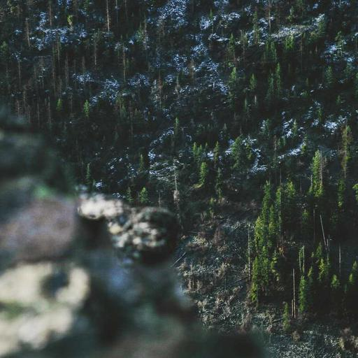
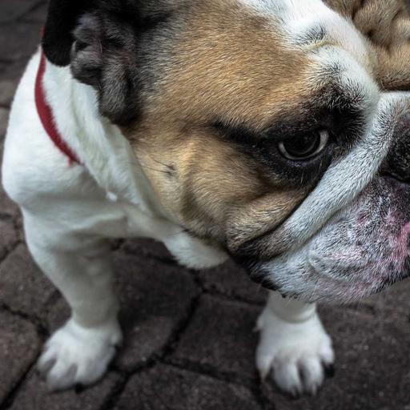

Gallery // nine photographs
Image gallery
Nine photographs in a responsive grid: one column on a phone, two on a tablet and three on a computer. Hover a photo to bring its colour back.






Gallery // nine photographs
Nine photographs in a responsive grid: one column on a phone, two on a tablet and three on a computer. Hover a photo to bring its colour back.

